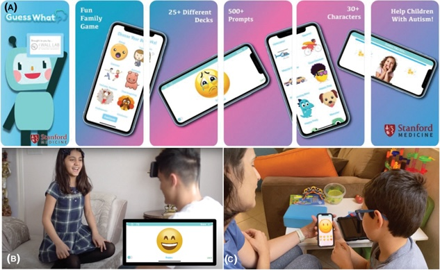

<!DOCTYPE html>
<html lang ="en">
    <head>
                <!-- Google tag (gtag.js) -->
        <script async src="https://www.googletagmanager.com/gtag/js?id=G-LKRJ9ZJ1J0"></script>
        <script>
        window.dataLayer = window.dataLayer || [];
        function gtag(){dataLayer.push(arguments);}
        gtag('js', new Date());

        gtag('config', 'G-LKRJ9ZJ1J0');
        </script>
        <link rel="icon" type="image/png" href="assets/skyfavicon.png"/>
        <meta charset="UTF-8">
        <meta name="viewport" content="width=device-width, initial-scale=1.0">
        <title>Research Publication</title>
        <link rel="stylesheet" href="style.css">
        <script src="https://code.jquery.com/jquery-3.5.1.js"></script>
        <script src="https://cdnjs.cloudflare.com/ajax/libs/OwlCarousel2/2.3.4/owl.carousel.min.js"></script>
        <link href='https://fonts.googleapis.com/css?family=Rubik' rel='stylesheet'>

        <link rel="stylesheet" href="https://cdnjs.cloudflare.com/ajax/libs/OwlCarousel2/2.3.4/assets/owl.carousel.min.css">
        <script src="https://kit.fontawesome.com/a076d05399.js"></script>
        <link rel="stylesheet" href="https://cdnjs.cloudflare.com/ajax/libs/font-awesome/5.15.3/css/all.min.css"/>


    </head>
</html>
<body>
    <nav class="navbar">
        <div class="max-width">
            <div class="logo"><a href="index.html">ARIANA PARISA SHAFIEE</a></div>
            <ul class="menu">
                <li class ="dropdown">
                    <a class="drop" href="index.html#what-i-do">What I Do
                        <span class="fas fa-caret-down"></span>
                    </a>
                    <input class="check" type="checkbox" id="btn-1">
                    <ul>
                      <li><a href="app-game-dev.html">App & Game Dev</a></li>
                      <li><a href="ux-design.html">UX Design</a></li>
                        <li><a href="research-publication.html">Research Publications</a></li>
                      <li><a href="video-&-animation.html">Video & Animation</a></li>
                      <li><a href="graphic-design.html">Graphic Design</a></li>
                      <li><a href="photo.html">Photo</a></li>
                      <li><a href="soccer-freestyle.html">Soccer Freestyle</a></li>
                  </ul>
                  </li>
                  <li><a href="index.html#projects">Featured Projects</a></li>
                <li><a href="index.html#testimonial">Testimonials</a></li>
                <li><a href="index.html#contact">Contact</a></li>
            </ul>
            <div class="menu-btn">
                <i class="fas fa-bars"></i>
            </div>
        </div>
    </nav>
    <!-- overview div start --> 
    <div class = 'overview'>
        <div class="max-width">
                <div class="text">Research</div>
        </div>
    </div>
<!-- Projects div start-->
<div class = 'projects' id = 'projects'>
    <div class="max-width">
        <div class="content">
            <div class="card">
                <div class="box">
                    
                    <div class="text">
                        <div class="header"> Cardiac Rehabilitation Enabled With Health Technology</div>
                        <div class="description"> Innovative Models of Care Delivery and Policy to Enhance Health Equity. Published in the Journal of the American Heart Association</div>
                        <div class="container">
                        <div class="link">
                            <a href="https://pubmed.ncbi.nlm.nih.gov/38226509/" target="_blank"> View Publication
                        </a></div>
                        <div class="tags">Cardiac Rehab, Health</div>
                    </div>
                    </div>
                </div>
            </div>
            <div class="card">
                <div class="box">
                    
                    <div class="text">
                        <div class="header">A Mobile Game Platform for Improving Social Communication in Children with Autism</div>
                        <div class="description">Feasibility study that examines the engagement level and therapeutic feasibility of a mobile game platform for children with autism. Published in Applied Clinical Informatics</div>
                        <div class="container">
                        <div class="link">
                            <a href="https://www.ncbi.nlm.nih.gov/pmc/articles/PMC8598393/" target="_blank"> View Publication
                        </a></div>
                        <div class="tags">Autism, Mobile Game</div>
                    </div>
                </div>
                </div>
            </div>
            <div class="card">
                <div class="box">
                    
                    <div class="text">
                        <div class="header">Co-Creating Atrial Fibrillation Patient Education Videos </div>
                        <div class="description">Combining Diverse Patient Feedback, Clinician Peer Review, and ChatGPT Content Analysis to Enhance Guideline-Directed Care Implementation. Published in Circulation Health Tech</div>
                        <div class="container">
                        <div class="link">
                            <a href="https://www.ahajournals.org/doi/10.1161/circ.148.suppl_1.18240"> View Abstract
                        </a></div>
                        <div class="tags">Vyond, Care Implementation</div>
                    </div>
                </div>
                </div>
            </div>
    </div>
</div>
<div class = 'footer'>
    <div class="container">
      <p>&copy; 2022 Ariana Parisa Shafiee</p>
    </div>
</div>
    <script>
        $('.icon').click(function(){
          $('span').toggleClass("cancel");
        });
      </script>
    <script src ="script.js"></script>
    
</body>
</html>
